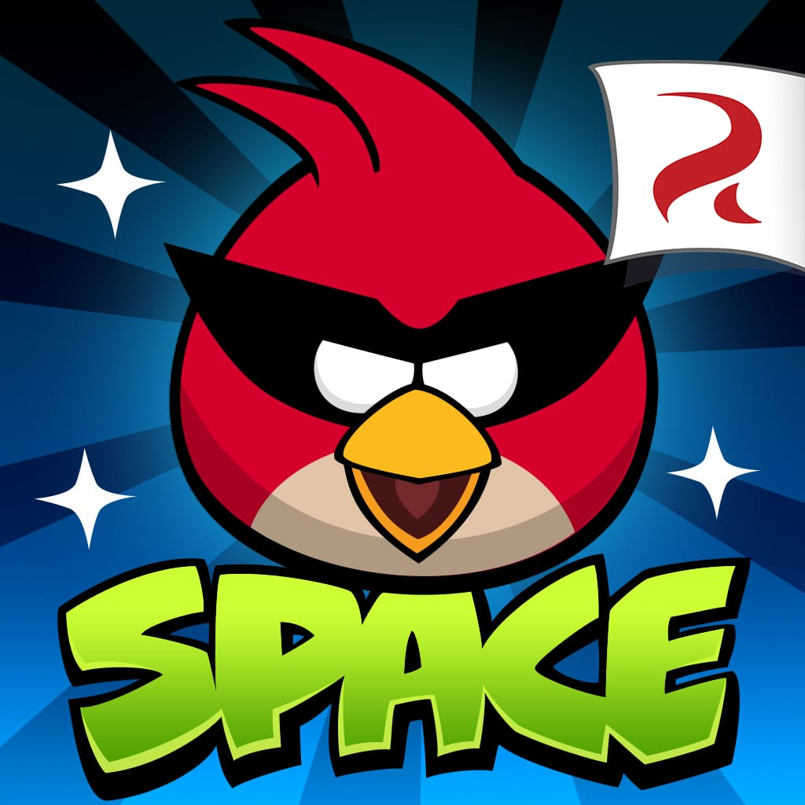

Bem-vindo à fase dos estilingues!
Angry Birds Space é o quinto jogo da série Angry Birds, lançado em 2012 e descontinuado em 2019. Ele se passa em uma galáxia distante, onde os pássaros, após passarem por um portal, ganham novas habilidades para perseguir os porcos ladrões de ovos.
Apesar de ter sido descontinuado em 2019, o jogo marcou a franquia por sua inovação, oferecendo uma experiência mais desafiadora e interessante do que os jogos anteriores, conforme a opinião de muitos jogadores.